AI4CPS entwickelt fortschrittliche KI-Lösungen zur Optimierung von Produktionsplanung, Zustandsüberwachung, Fehlerdiagnose sowie simulationsbasierter Entscheidungsunterstützung für komplexe industrielle Umgebungen.
KI-basierte Optimierungsmodelle zur Reduzierung von Engpässen, Stabilisierung von Prozessen und nachhaltigen Steigerung des Produktionsdurchsatzes.
Echtzeit-Anomalieerkennung und Predictive Maintenance zur Minimierung ungeplanter Stillstände und Verlängerung der Anlagenlebensdauer.
Automatisierte Ursachenanalyse und simulationsgestützte Szenariobewertung zur fundierten operativen und strategischen Entscheidungsfindung.
Analyse Ihrer Produktionssysteme, Integration relevanter Datenquellen, Entwicklung maßgeschneiderter KI-Modelle sowie Implementierung in bestehende IT- und OT-Infrastrukturen.
Unsere proprietäre KI-Software SelfX wird nahtlos in Ihre industrielle Umgebung integriert und unterstützt operative Entscheidungen in Echtzeit.
Nach erfolgreicher Implementierung erfolgt die Vergütung ausschließlich über eine transparente Softwarelizenz – planbar, skalierbar und langfristig effizient.
Reduktion ungeplanter Stillstände um 27 % sowie Steigerung des Produktionsdurchsatzes um 15 % durch KI-basierte Planung und Anomalieerkennung.
Implementierung eines kontinuierlichen Monitoringsystems zur frühzeitigen Erkennung kritischer Anomalien – Reduktion unerwarteter Anlagenfehler um 35 %.
Erhalten Sie einen Einblick in unsere KI-Software SelfX und deren Anwendung in industriellen Produktionsumgebungen.
Erfahren Sie, wie SelfX Ihre Produktion nachhaltig optimieren kann.